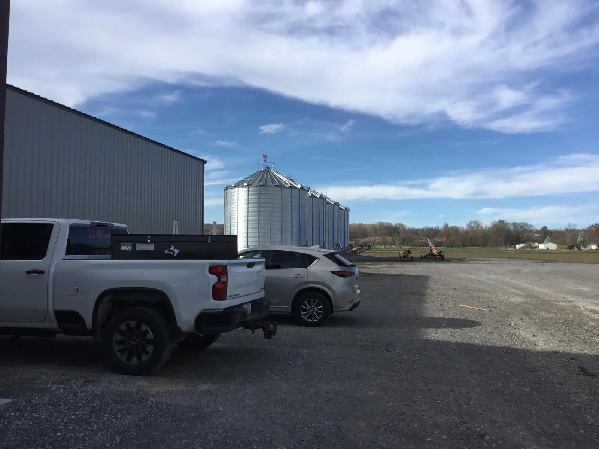

Rice
Discuss rice sourcing for your domestic or international requirements.
Enquire about riceCommodities & operations
Agricultural commodities, complementary products and the relationships that support their trade.

Your requirements. Our starting point.
Tell us the commodity, quantity, destination and specifications you need. Our team will discuss the available options with you.
Discuss your requirementsAgricultural portfolio
Discuss rice sourcing for your domestic or international requirements.
Enquire about riceConnect with our team about corn and maize requirements.
Enquire about cornEnquire about barley sourcing for your business.
Enquire about barleyDiscuss sorghum requirements and intended applications.
Enquire about sorghumShare your oat sourcing needs with our team.
Enquire about oatsDiscuss wheat sourcing for your business requirements.
Enquire about wheatEnquire about sesame seeds and your preferred specifications.
Enquire about sesameDiscuss soybean sourcing and delivery requirements.
Enquire about soybeansShare your preferred bean varieties and quantities.
Enquire about beansConnect with our team about cocoa sourcing opportunities.
Enquire about cocoaProduct specifications, availability and delivery arrangements are confirmed directly with our team.
Feed the Crop.
Build the Soil.
Remove Carbon.
Partner spotlight / Agricultural inputs
Meet BROWN by AirSmat Limited: a biochar-based fertiliser produced in Nigeria, combining crop nutrients with carbon-rich biochar.
According to AirSmat’s brochure, BROWN is designed to support crop nutrition, nutrient retention and soil water management.
Results depend on crop type, soil conditions, application rates and farming practices. Long-term carbon benefits depend on appropriate production and use.
Beyond agriculture
Specialist enquiries, handled through a direct conversation about your requirements.
01 / Precious metals
Discuss your precious-metals requirements with our team, including the product, quantity and destination.
Precious-metals enquiry02 / Pharmaceuticals
Contact our team about pharmaceutical trade enquiries. Share the products and market you are interested in.
Pharmaceutical enquiryOur service network
Relationships with producers, cooperatives and commercial partners support commodity sourcing.
Coordination with logistics, warehousing and shipping providers supports delivery planning.
Specialist processing relationships help align products with buyer requirements.
Market knowledge and agribusiness consulting support informed commercial decisions.
A view from the field
Selected imagery from company visits and its agricultural network.
Watch & discover
05:16 / Facility visit
A recorded visit to a facility, offering a glimpse of the people and setting.
00:26 / Maize inspection
Maize inspection footage featuring a digital moisture meter.